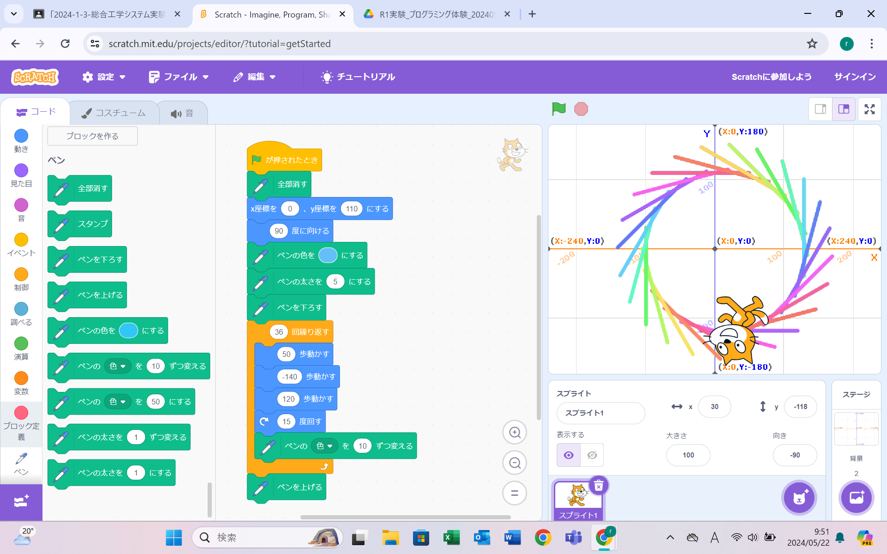
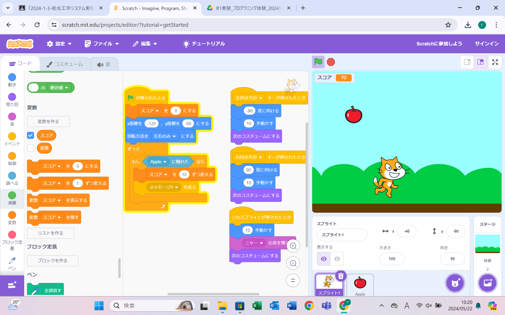

1週目のレポート ： 公大高専１年実習I-1
3a班17番 鈴
第1週目
1-1 サイエンスアート

1.内容
スクラッチを使って線を書くプログラムを、旗のマークが押されたらプログラムされた猫の位置と方向になって、
プログラムされた動きをすると同時に、設定したペンの色や太さで線が描かれていくようになっている。
そして、だんだん色も変わっていくようになっている。
2.感想
中学校のしたスクラッチでは、拡張機能は使わない基本的なプログラミングしかしなかったので、新しい機能を知ることが出来て良かった。
工夫を重ねれば、色々な事ができるのだと驚きました。プログラムして猫を動かすのが楽しかった。
1-2 ゲーム

1.内容
旗が押されたらスコアを0にし、プログラムされた位置まで猫が移動する。
そして、上からリンゴがランダムの場所から落ちてくるのでリンゴをキャッチしたら点数が増えていく。
左矢印を押したら左に、右矢印を押したら右に猫が動くようになっていて、ボタンを押すごとに猫のイラストが変わるようになっている。
2.感想
中学校で、ゲームのプログラムは少し作ったことはあったけれど、スコアの表示の仕方などわからなかったこともあったので、
この授業で解決できてすっきりしました。こんなにクオリティの高いプログラムができると思っていなかったので、驚きました。
1-3 ホームページ作成
私のホームページ
1.内容
あらかじめあったプログラムされてあったものを、一部自分のことに変えて作成した。
2.感想
実際に文字を打ち込んでプログラムすることはあまりなかったので、新鮮でした。
こんなに簡単に自分のホームページが作れると思っていなかったので、作れた時は嬉しかったです。
各ページへのリンク
1週目のレポート
2週目のレポート
3週目のレポート
私のホームページ